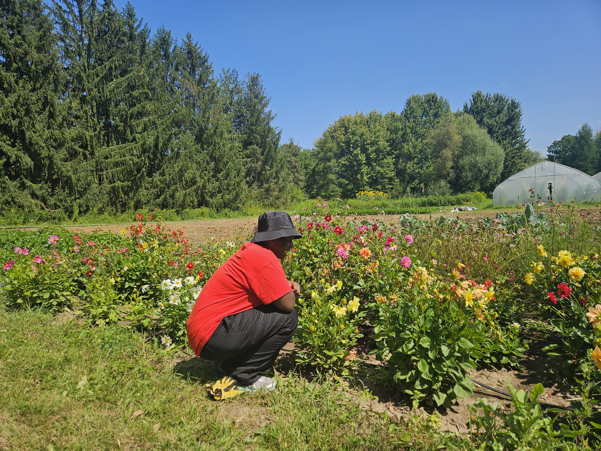
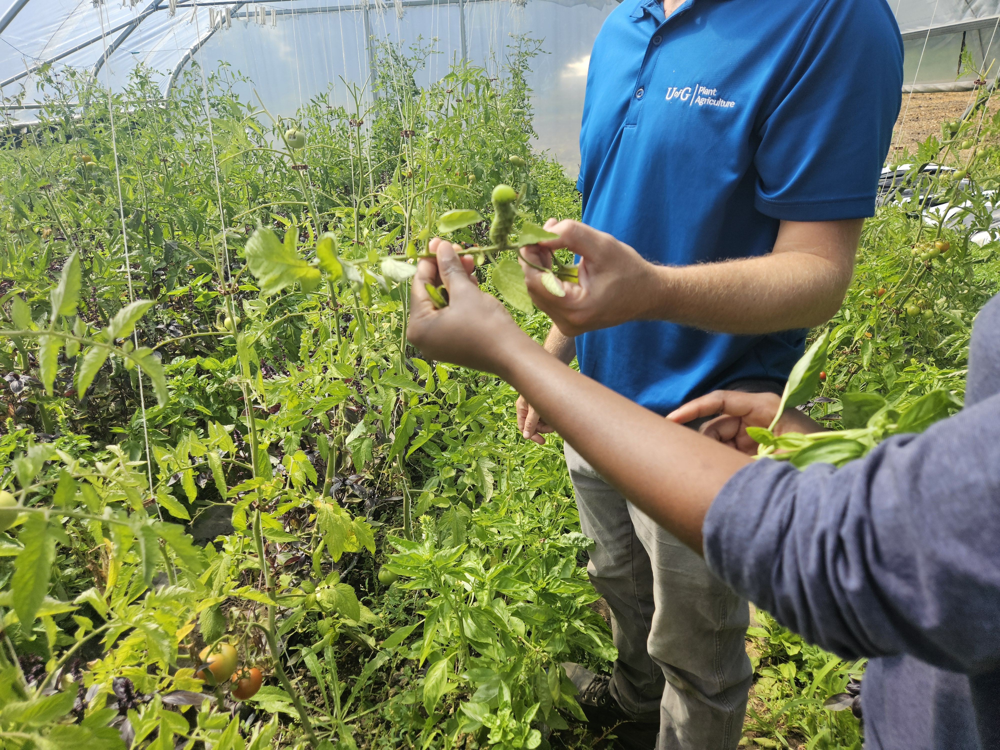
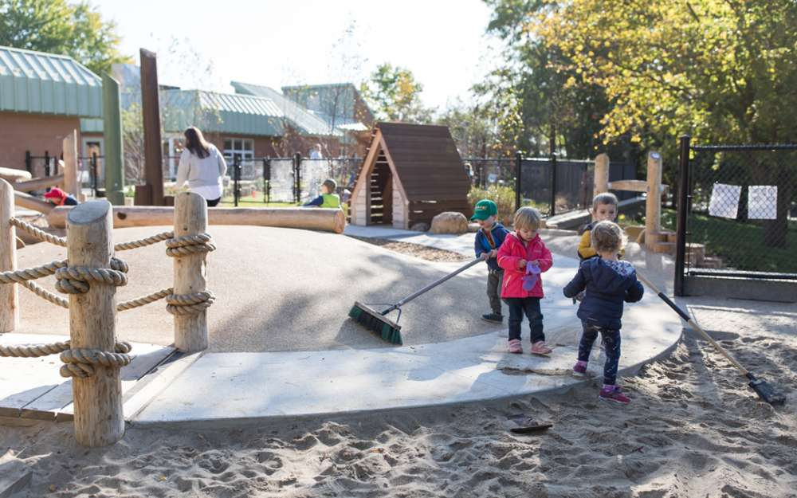

Kumon Tutor — Kumon (2019–2022)
Taught pre-schoolers to highschoolers
their ABCs and 123s.
a mini-scrapbook of the stuff I've done, joined and played
The jobs that paid tuition, the bills and taught me things no classroom could. From tutoring toddlers to keeping university websites running, here's where I've clocked in.
Kumon Tutor — Kumon (2019–2022)
Taught pre-schoolers to highschoolers
their ABCs and 123s.


Web and IT Associate — Research Service Office, UoG (W24-Present)
Keeping the university Research website up to date! Going through a website redesign currently. (I designed
the homepage, check it out!)


Systems and Technology Co-op — Registrar Office, UoG (Fall 2024)
Upgraded 70+ laptop's software in the office, providing amazing tech support
Office Assistant — Graduate Office, UoG (Winter 2025)
Helped navigate
graduate admissions questions for interested applicants
Giving back, one weekend project at a time, trying to leave things a little better.

Research Volunteer- York University (Summer '26-Present)
Analyzing
the negative bias of AI towards African American Vernacular English (AAVE).


Harvest Helper — Guelph Urban Organic Farm (2026)
Helped out with the
university's organic farm. The cherry tomatoes are so good!

Volunteer — Child Care Learning Centre (Future)
Signed up be a tech
helper and playing with the kids during recess!
The groups I showed up for every week (they usually have pizza). Community, culture and way too many group chats.

Guelph Black Professionals - Creative Director (Fall 2026-Present)
Promoting via the social media presence and making the funniest Instagram Reels.


Guelph Black Student Association - Member (2022–Present)
Also a part
of Caribbean Culture Club (CCC) and The African Student Association (TASA). Going to all the game nights,
rowdy discussions and the annual gala.
Ways I got involved beyond the classroom. Conferences and events that pulled me out of my comfort zone.

Co-op Reverse Job Fair (Fall 2025)
Self-advocated for my
professional
and academic career like a company. Students had the booths and recruiters were the ones walking around!

Mentee Merit Award Program (2023-2026)
Participated in the annual
summer
mentorship I received as a career-long award from highschool. Going 3 summers strong!


CAN-CWiC Conference (F25, F26)
Sponsored by the university and went
to the annual Celebration of Women in Computing Conference. (Sponsor me again pls!)
Where I burned off energy and occasionally showed athletic promise. Cheerleading, yoga, and the occasional gaming tournament.


Cheerleader (2019–2022)
Cheered in highschool for three years and did
one more at the university. I performed at the 2022 HOCO football game, Go Gryphons!

Yoga Enthusiast (2019–present)
Stretching my limbs, so I can touch my
toes at 83 years old.


Video Game Enjoyer (February 2026)
Won a 2KO tournament hosted at
Three Pieces(vintage store) here in Guelph. Won prize money, coupons to tattoos, and a limited edition
gaming collectible.
The creative side projects that keep me sane. Guitar, dance, and sketchbooks. This is where I think with my hands.

Self-Taught Guitarist (2018–present)
Been playing off-and-on since 8th
grade. Currently learning the song, Zombies by The Cranberries (in my Rock era).

Heels Dancing (F24, F25)
Learned heels dancing at the Athletic Centre,
and performed at the Rec Dance Fall Showcase (two semesters).


30-Day Art Challenges (S25, S26)
Every summer I challenge myself to 30
days of consistent drawing, colouring and sometimes painting.
Cool tech stuff and projects.


Lineage (SaaS)
Building a website that allows users to make and track
their family tree. Got a big family and can't remember everyone's name? Lineage solves that.

Senior Bucket List
In my last year of school and I'm getting FOMO
already. Published my bucket list and made it a personal journal and diary.